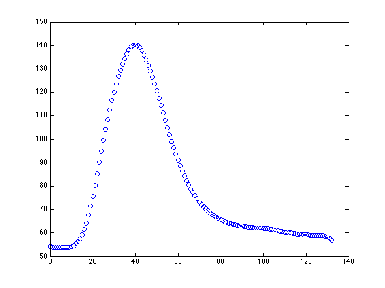
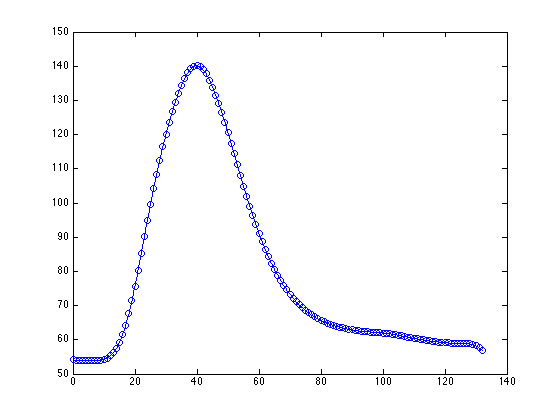
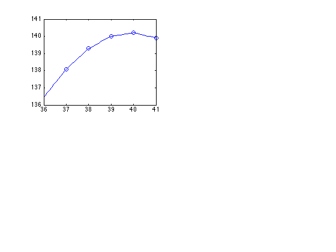
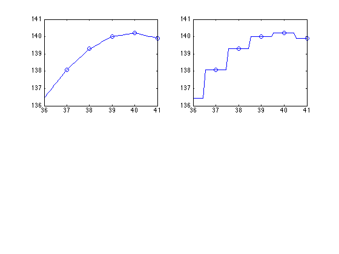
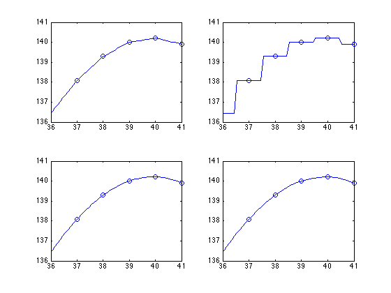
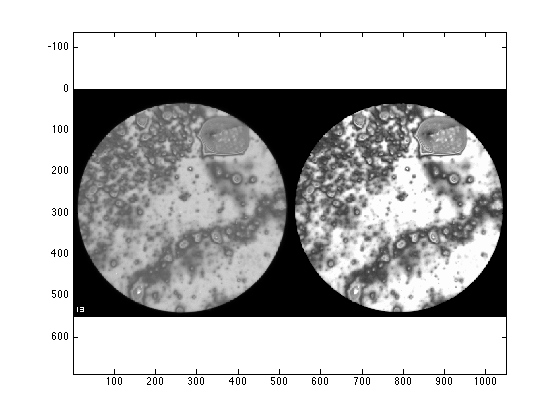
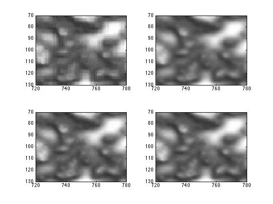

Contents
Interpolation of data
Toby Driscoll, July 2014
clear, close all
Raw data
Here is some experimental data in a spreadsheet.
blink = importdata('blink_data.xlsx')
blink =
data: [133x2 double]
textdata: {'Time' 'Raw data'}
colheaders: {'Time' 'Raw data'}
We want the numeric part.
t = blink.data(:,1); % first column y = blink.data(:,2); % second column
plot(t,y,'o') hold on
Suppose we want to turn these data into a function. One way we already know is the best-fit line, but that is clearly ridiculous in this case.
While we could 'fit' other kinds of functions, another approach is to interpolate the data: find a function that passes through all the given points. Obviously, there are infinitely many functions that do so, but we have some standard methods, all implemented by the built-in function interp1.
We'll evaluate the candidates at values of t between the given ones.
tInterp = linspace(min(t),max(t),10*length(t))';
Piecewise linear interpolation
The simplest idea is to draw a straight line between each neighboring pair of points.
y1 = interp1( t, y, tInterp, 'linear' ); plot(tInterp,y1,'b-')
It's going to be difficult to tell the methods apart by showing all of the data, so we will zoom in. Also, we'll create a tableau for the different methods.
subplot(2,2,1) % 4 by 1 array of plots plot(t,y,'o') hold on plot(tInterp,y1,'b-') xlim([36 41])
Piecewise constant
A different interpolation method is to find a piecewise constant approximation--take on the y-value of the nearest point.
y2 = interp1( t, y, tInterp, 'nearest' ); subplot(2,2,2) plot(t,y,'o') hold on plot(tInterp,y2,'b-') xlim([36 41])
Piecewise cubic
The two interpolants so far are not very smooth (C_0 and C_{-1}, respectively). Not only can we not differentiate them easily, but the lack of smoothness also limits their convergence rate in the case where the discrete values are samples of a smooth function.
A common smoother interpolant is piecewise cubic with two continuous derivatives. There are two ways to construct these.
y3 = interp1( t, y, tInterp, 'spline' ); subplot(2,2,3) plot(t,y,'o') hold on plot(tInterp,y3,'b-') xlim([36 41]) y4 = interp1( t, y, tInterp, 'pchip' ); subplot(2,2,4) plot(t,y,'o') hold on plot(tInterp,y4,'b-') xlim([36 41])
The differences are very subtle here. Splines are smoother (C_3 at most points) but can oscillate more. The other piecewise cubic always has the same local extrema as the original data.
Interpolation in 2D
You may not realize it, but it's likely that you have done 2D interpolation on your phone. This is often done when an image is resized.
An image is a discrete function of two variables (row and column position). It's usually vector-valued, with intensity of red, green, and blue light.
Here we will use a grayscale image, which is just a scalar function giving the intensity.
X = imread('lipid.bmp');
imageSize = size(X)
imageSize = 440 840
The values range from 0 (black) to 255 (white).
globalMax = max(max(X)) globalMin = min(min(X))
globalMax =
255
globalMin =
0
Let's have a look.
clf image(X) axis equal % circles look like circles colormap(gray(256)) % map [0,255] to [black,white]
For efficient storage, integer numbers over a small range are represented by 8-bit chunks.
class(X)
ans = uint8
We need to convert them to 'floating point' or 'double precision' numbers, which are the computer analog of real numbers.
X = double(X);
Suppose we want to enlarge the image by 25% in each dimension. There is one catch: the first dimension of X is the y coordinate (veritcal), and the second dimension is x. So we have to switch them.
iInterp = linspace(1, imageSize(2), round(1.25*imageSize(2)) ); jInterp = linspace(1, imageSize(1), round(1.25*imageSize(1)) );
There is a special command called meshgrid that transforms these coordinate vectors into coordinate matrices appropriate as 2D functions.
[IInterp,JInterp] = meshgrid(iInterp,jInterp);
There is an interp2 command for 2D interpolation using essentially the same four methods.
X1 = interp2( 1:imageSize(2), 1:imageSize(1), X, IInterp, JInterp, 'nearest' ); clf image(X1) axis equal
Here are the remaining methods.
subplot(2,2,1) image(X1) axis([720 780 70 130]) X2 = interp2( 1:imageSize(2), 1:imageSize(1), X, IInterp, JInterp, 'linear' ); subplot(2,2,2) image(X2) axis([720 780 70 130]) X3 = interp2( 1:imageSize(2), 1:imageSize(1), X, IInterp, JInterp, 'spline' ); subplot(2,2,3) image(X3) axis([720 780 70 130]) X4 = interp2( 1:imageSize(2), 1:imageSize(1), X, IInterp, JInterp, 'cubic' ); subplot(2,2,4) image(X4) axis([720 780 70 130])
The last two methods are somewhat sharper than the first two.